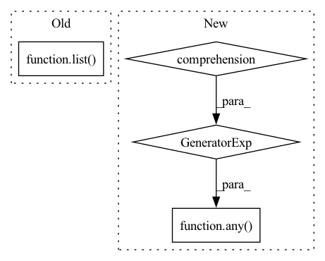

Pattern ID :16682
Before Change
filtered_ents = set(filter(self.combined_filter_fn, section_ents))
section_ents.difference_update(filtered_ents)
section.entities = list( section_ents)
class DropUnmappedEntsEntityFilters:
def __init__(self, from_ent_namespaces: Iterable[str]):After Change
def cleanup(self, doc: Document):
for section in doc.sections:
section.entities = [
entity for entity in section.entities if not any(f (entity) for f in self.filter_fns)
]
class DropUnmappedEntityFilter:In pattern: SUPERPATTERN
Frequency: 3
Non-data size: 4
Instances Fragment ID: 55897110
Project Name: astrazeneca/kazu
Commit Name: daa9e9e80eb45c234ea8215c3024f70569d849c2
Time: 2022-11-30
Author: rolando.fernandez@astrazeneca.net
File Name: kazu/steps/other/cleanup.py
M Class Name: EntityFilterCleanupAction
N Class Name: EntityFilterCleanupAction
M Method Name: cleanup(2)
N Method Name: cleanup(2)
M Parent Class:
N Parent Class:
M File Name: kazu/steps/other/cleanup.py
N File Name: kazu/steps/other/cleanup.py
M Start Line: 44
M End Line: 49
N Start Line: 24
N End Line: 27
Before Change
if polygon.intersects(bbox) and polygon not in polygons_to_crop:
polygon = polygon.intersection(bbox)
polygons_to_crop.append(polygon)
return list( itertools.chain.from_iterable(map(validate_polygon, polygons_to_crop)))
def get_scales(
min_row: int,After Change
)
unique_polygons = []
for polygon in valid_polygons:
if not any(polygon .equals(p) for p in unique_polygons) :
unique_polygons.append(polygon)
return unique_polygons
Fragment ID: 55897111
Project Name: dsgoficial/pytorch_segmentation_models_trainer
Commit Name: 050ca0b6f2837811e4cd1bbb584b9e0bd9744761
Time: 2021-11-25
Author: philipeborba@gmail.com
File Name: pytorch_segmentation_models_trainer/utils/polygonrnn_utils.py
M Class Name: AnonimousClass
N Class Name: AnonimousClass
M Method Name: crop_polygons_to_bounding_boxes(2)
N Method Name: crop_polygons_to_bounding_boxes(2)
M Parent Class:
N Parent Class:
M File Name: pytorch_segmentation_models_trainer/utils/polygonrnn_utils.py
N File Name: pytorch_segmentation_models_trainer/utils/polygonrnn_utils.py
M Start Line: 387
M End Line: 393
N Start Line: 389
N End Line: 400
Before Change
list_dir = os.listdir(root)
list_dir = list( filter(lambda x: not _is_lightly_output_dir(x), list_dir))
is_dir = \
[os.path.isdir(os.path.join(root, f)) for f in list_dir]
return any(is_dir)
After Change
with os.scandir(root) as scan_dir:
return any(not _is_lightly_output_dir(f.name) for f in scan_dir \
if f.is_dir())
def _load_dataset_from_folder(root: str, transform):
Initializes dataset from folder. Fragment ID: 55897112
Project Name: lightly-ai/lightly
Commit Name: ca83601cd72fde73ade02a156c213f0b0c07d034
Time: 2021-06-09
Author: 65946090+philippmwirth@users.noreply.github.com
File Name: lightly/data/_helpers.py
M Class Name: AnonimousClass
N Class Name: AnonimousClass
M Method Name: _contains_subdirs(1)
N Method Name: _contains_subdirs(1)
M Parent Class:
N Parent Class:
M File Name: lightly/data/_helpers.py
N File Name: lightly/data/_helpers.py
M Start Line: 64
M End Line: 68
N Start Line: 62
N End Line: 66